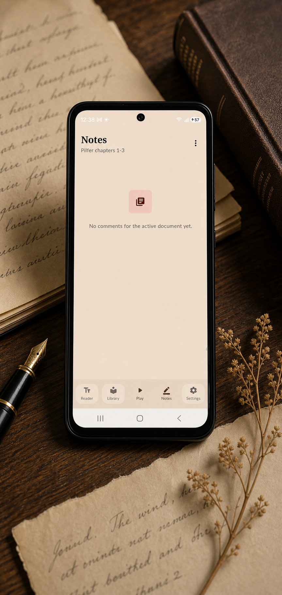
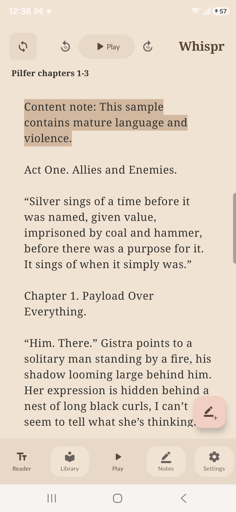
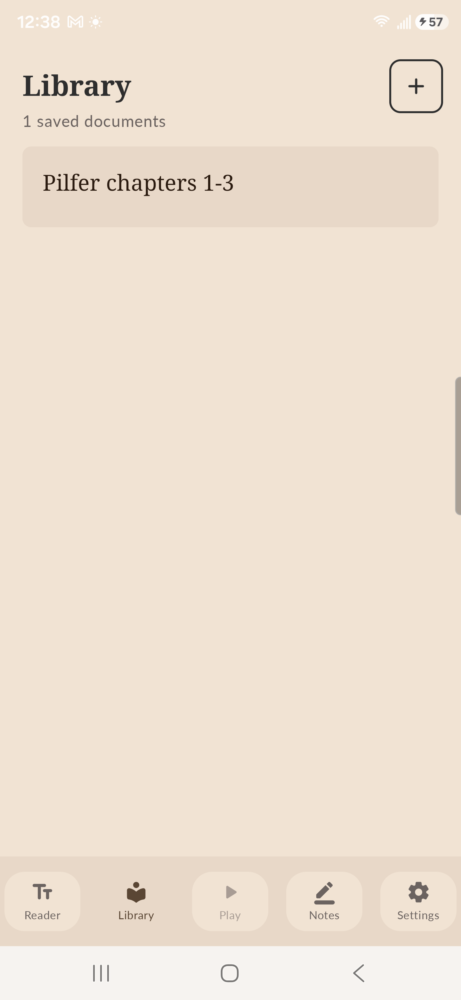
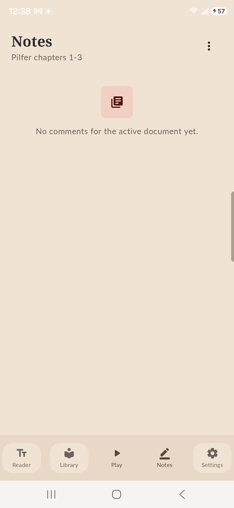
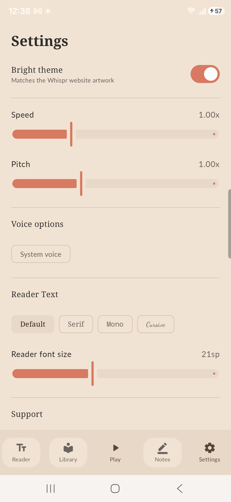

Offline by default
Core reading, playback, notes, and local transcription are designed to work without an account. No subscriptions, no accounts, no internet required. Period.
Whispr is a local-first free reading app for Android. Import text, PDFs, EPUBs, DOCX files, and web articles, then listen with playback controls built for voice notes and revision.
Core reading, playback, notes, and local transcription are designed to work without an account. No subscriptions, no accounts, no internet required. Period.
We won't charge you. Whispr is designed to be free with no costs or subscriptions.
Built for editing, Whispr is made to notate a document as it's read to you, giving you the tools for effective and efficient markup, putting audio first to blend into your workflow.
Pilfer chapters 1-3
Content note: This sample contains mature language and violence.
Act One. Allies and Enemies.
“Silver sings of a time before it was named, given value, imprisoned by coal and hammer, before there was a purpose for it. It sings of when it simply was.”
Chapter 1. Payload Over Everything.
"Him. There." Gistra points to a solitary man standing by a fire, his shadow looming large behind him.
Easy.
Whispr keeps voice notes with the reading moment that inspired them. Saved audio can be played back later, and local transcription helps turn spoken thoughts into reviewable text.

Captured from the current Android build with Pilfer loaded.




Whispr is being built by Ian Nytes as a local-first reader for writers, readers, and anyone who wants long-form text to be easier to hear, annotate, and revisit.